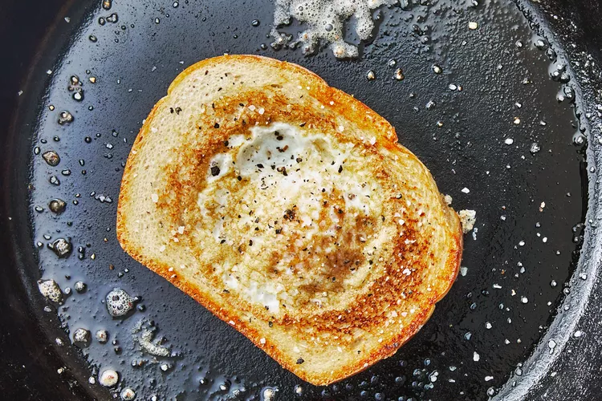

Egg In A Hole

This is a simple breakfast that hits the spot.
Ingredients:
- 1thick slice of bread - sourdough is a good choice
- 1 egg
- 1 tablespoon butter
- salt and pepper
- hot sauce - optional
Steps:
- Use a large glass to cut a hole in the center of the bread.
- Heat the butter in a cast iron skillet over medium heat.
- When butter is melted, add the slice and circle of bread to the pan.
- Allow bread to toast for a minute, then crack the egg into the hole. It's ok if it overflows onto the bread a little bit.
- Sprinkle salt and pepper over egg and cook until it begins to set.
- Flip the toast and egg and cook to desired doneness.
- Serve egg in a hole on a plate with the circle of bread and top with hot sauce if desired.